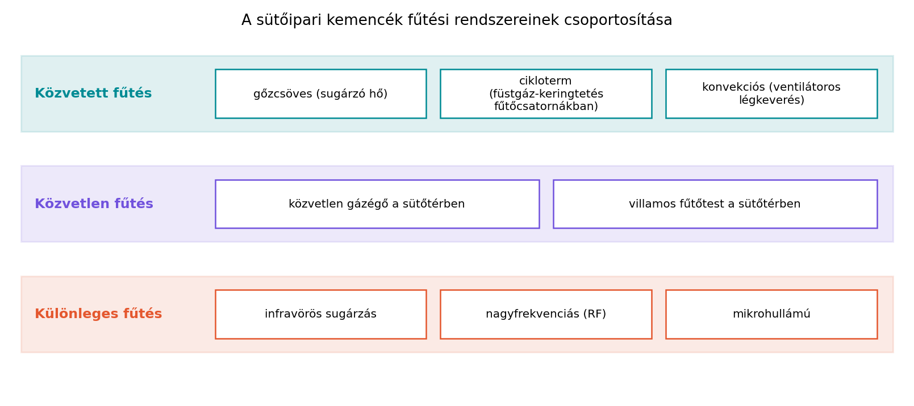

Hajnali három óra van, a tanuló az első önálló kenyérsütését készíti elő. A kemence már felfűtött, de a pék azt kéri, hogy „nézz rá a lángra, mert ma gázos kemencéből megy a gőzcsövesbe”. A tanuló először azt gondolja, a kemence csak egy forró doboz. Aztán azt látja, hogy az egyik kenyér alja gyorsan pirul, a másiké nyers marad, a harmadiknál a héja pattan fel. A különbség nem a lisztben, hanem a kemence fűtési rendszerében van. Ebben az alfejezetben azt tanuljuk meg, hogyan csoportosíthatjuk a kemencéket, és mit jelent a gyakorlatban a közvetlen, a közvetett, a gőzcsöves, a cikloterm, a konvekciós, illetve a különleges fűtési mód. Akkor tudunk jól sütni, ha értjük, hogyan jut a hő a tésztába, és miért nem mindegy, hogy sugárzással, vezetéssel vagy forró levegő áramlásával sütünk.
A következő ábra a sütőipari kemencék fűtési rendszereinek fő csoportjait mutatja. Nem minden kemence sorolható be tisztán egyetlen dobozba: sok mai berendezés kombinálja például a konvekciós levegőáramot a kemence aljában elhelyezett sugárzó fűtőfelülettel.

Az ábra azt hangsúlyozza, hogy a „kemence típusa” soha nem önmagában a hőforrás (gáz, olaj, villany), hanem az is, hogy a hő hol keletkezik, milyen úton éri el a terméket, és milyen felületen adódik át. A gőzcsöves kemence például gyakran gázzal fűtött, de a tészta nem a lánggal, hanem a gőzzel töltött csövek sugárzó felületével találkozik.
Definíció. A sütőipari kemence olyan hőkezelő berendezés, amely a tésztadarabot megfelelő hőmérsékleten, meghatározott idő alatt, szabályozott nedvességű környezetben kenyérré vagy péksüteménnyé süti. A kemence részei közé tartozik a sütőtér (ahol a termék a sütőfelületen áll), a hőtermelő rendszer (égő, fűtőtest), a hőközlő rendszer (ami a hőt a sütőtérbe és a termékbe juttatja), a hőmérséklet- és gőzszabályozás, valamint a biztonsági és kezelőrendszer.
Definíció. A fűtési rendszer a kemence azon kialakítása és működési módja, amely meghatározza, milyen hőhordozó (égéstermék, gőz, levegő, elektromágneses sugárzás) és milyen hőátadási mód (vezetés, áramlás, sugárzás) útján jut a hő a tésztába. A fűtési rendszer döntően befolyásolja a termék héját, bélzetét, tömegveszteségét és a sütési idő egyenletességét.
Továbbvitt eredmény. A kemence fűtési rendszerének ismerete nélkül nem tudjuk értelmezni, miért más egy épített és egy szerelt kemence üzemeltetése. Ezt a felosztást és a hőátadási jellemzőket az Épített és szerelt kemencék alfejezetben használjuk tovább, amikor a konkrét kemencefajták szerkezeti és kezelési különbségeit tanuljuk.
A kemencéket több szempont szerint csoportosíthatjuk. A mindennapi pékségi gyakorlatban a következő szempontok a legfontosabbak:
Megjegyzés. A „kemence típusa” a gyakorlatban gyakran keveri ezeket a szempontokat. Egy modern, gázüzemű konvekciós kemence egyben szerelt, szakaszos (vagy folyamatos) és közvetett fűtésű is lehet. Ezért mindig pontosan kérdezzünk rá: milyen hőhordozóval, milyen hőátadással, milyen sütőtérkialakítással dolgozik az adott berendezés?
Definíció. Közvetlen fűtésről akkor beszélünk, ha az égéstermék (például a gáz vagy olaj elégetésekor keletkező forró füstgáz) közvetlenül érintkezik a sütőtér levegőjével, illetve a hő a sütőtéren belüli fűtőfelületről közvetlenül sugárzik a termékre. Közvetett fűtésnél az égéstermék nem érintkezik a sütőtér levegőjével és a termékkel, hanem egy hőcserélőn vagy fűtőcsőrendszeren keresztül adja le a hőt, és a sütőtérbe már csak a megtisztított, közvetett módon felmelegített hőhordozó (például levegő, gőz vagy fűtött felület) jut.
Gyakorlati jelentőség. A közvetlen fűtés általában egyszerűbb, gyorsabban felfűt, és erőteljesebb, gyorsabb hőátadást tud adni. Ugyanakkor az égéstermék nedvességet, szennyező maradványokat és szén-dioxidot is bevihet a sütőtérbe, ami befolyásolhatja a termék héjának színét, ízét és a sütőtér tisztaságát. A közvetett fűtés tisztább, egyenletesebben szabályozható, de gyakran kisebb a hőfokrugalmassága, hosszabb a felfűtési idő, és a hőcserélő karbantartást igényel.
Példa. Egy hagyományos falazott kemencében a fa elégetése közvetlenül a sütőtérben történik, a parázs és a láng hősugárzása közvetlenül éri a kenyeret. Egy modern, gázfűtésű konvekciós kemencében viszont az égő egy zárt égőkamrában dolgozik, a keletkezett forró levegő egy ventilátor segítségével áramlik át a sütőtéren, így a tészta nem érintkezik füstgázzal.
HACCP. A közvetlen fűtésű, nyílt égésterű kemencéknél nagyobb figyelmet kell fordítani az égéstermék-maradványok (például korom, pernye) sütőtérbe jutásának megelőzésére. A termék érintkezése ilyen szennyezéssel idegenanyag-kockázatot jelent. A rendszeres tisztítás, az égő beállításának ellenőrzése és a füstgázelvezetés működése része a napi üzemellenőrzésnek. Az égő és a hőcserélő tisztaságát a HACCP-terv szerint dokumentálni kell (ellenőrizendő: a pékség HACCP-terve, gépkönyv).
Definíció. A gőzcsöves fűtés (gyakran Perkins-rendszerűnek is nevezik) olyan közvetett fűtési mód, amelyben a hőt egy zárt csőrendszerben keringő gőz vagy gőzzel telített hőhordozó közeg szállítja a sütőtér falában, boltozatában vagy aljában elhelyezett fűtőfelületekhez. A csövek felforrósodnak, és elsősorban sugárzással adják le a hőt a tészta felületének. A hőátadás lassabb, de rendkívül egyenletes, és nagy hőtároló tömeg jellemzi.
A gőzcsöves kemence különösen alkalmas nagy tömegű, hosszú sütési idejű termékekhez, például kenyérfélékhez, mert a tészta mélyebb rétegei is fokozatosan melegszenek fel anélkül, hogy a héja túl gyorsan megégne. A hagyományos, boltozatos kenyérsütő kemencékben gyakran ilyen rendszerrel találkozunk, akkor is, ha a hőt nem gőz, hanem forró fűtőlevegő vagy fűtőfolyadék szállítja a csövekben.
Összefüggés. A csőfelület hőmérséklete határozza meg a sugárzás intenzitását. Minél magasabb a csőhőmérséklet, annál nagyobb a hőleadás a termék felé. A gyakorlatban a gőzcsöves kemencék sütőterét általában 220–280 °C közötti hőmérsékletre fűtik (ellenőrizendő: gyártói adatlap, terméktechnológia), ezért a csövek felületi hőmérséklete ennél magasabb kell legyen.
A gőzcsöves kemencéknél a péknek többet kell várnia a felfűtésre, mint egy könnyű konvekciós berendezésnél. A hőtároló tömeg miatt azonban a hőmérséklet-ingadozás vetéskor kisebb, és a kemence kevesebb energiával tartja az üzemi hőfokot.
Definíció. A cikloterm fűtés közvetett fűtési mód: az égőkamrában keletkező forró füstgázt ventilátor keringteti a sütőkamrák körül és között vezetett fűtőcsatornákban; a sütőtérbe égéstermék és légáram nem jut, a terméket a felhevült kamrafalak (sütőfelület, boltozat) sugárzással és vezetéssel sütik (ellenőrizendő: gyártói leírás, sütőipari szakirodalom). A konvekciós (légkeveréses) kemencében ezzel szemben a sütőtér levegőjét keringteti ventilátor.
A konvekciós fűtés során a hőt a mozgó forró levegő adja le a termék felületének; a gyakorlatban „légkeveréses” vagy „ventilátoros” kemencének is nevezzük. Jellemzője a nagy légsebesség és a gyors, hatékony hőátadás, ezért rövidebb sütési időt tesz lehetővé, és jól alkalmas péksüteményekhez, leveles tésztákhoz, vékonyabb termékekhez. A levegő áramlása elszállítja a héj felületéről a nedvességet, ami a pirulást is segíti.
Figyelem. A konvekciós kemencéknél a levegő irányított áramlása miatt a sütőtéren belül hőmérséklet-eltérések alakulhatnak ki, például a légáram felőli oldalon a termék hamarabb pirul. Ezért a tésztákat gyakran forgatni kell, vagy a gyártó által megadott sütési sorrendet kell tartani. A pontos sütési időt és hőmérsékletet mindig a terméktechnológiai lap adja meg (ellenőrizendő: üzemi technológiai lap).
Példa. Ha ugyanazt az 55 g-os vizes zsemlét betesszük egy gőzcsöves kemencébe és egy konvekciós (légkeveréses) kemencébe, a konvekciós berendezésben jellemzően rövidebb idő alatt éri el a kívánt héjszínt, de ha nem figyelünk a légáramra, a zsemlék egyenetlenül pirulnak. A gőzcsöves kemencében hosszabb sütés kell, és vastagabb, ropogósabb héj alakulhat ki (tanulási példa, termék- és gépfüggő).
A három közvetett fűtési rendszer közti különbséget az alábbi keresztmetszetek mutatják: hol keletkezik a hő, milyen úton halad a hőhordozó, és hogyan éri el a terméket. A gőzcsöves kemencében (1) a tűztérben felhevülő zárt csövek a sütőtér alatt és fölött sugároznak (hullámos nyíl). A cikloterm kemencében (2) az égőkamra füstgázát ventilátor keringteti a sütőkamrák körüli csatornákban (szaggatott nyíl); a sütőtérbe sem füstgáz, sem légáram nem jut, a terméket a felhevült falak sugárzása és a sütőfelület vezetése (pontsor) süti. A konvekciós kemencében (3) a ventilátor a hőcserélőn felmelegített levegőt fújja át a sütőtéren (folytonos nyíl).
A cikloterm és a konvekciós kemence tehát egyaránt ventilátort használ, de a cikloterm a füstgázt a csatornákban, a konvekciós a sütőtér levegőjét mozgatja: ezért csak a konvekciós kemencében kell a légáram felőli oldal gyorsabb pirulásával számolni. A HTML-kiadásban a három kemence lépésenként, nagyítva követhető.
A sütőiparban a fő hőforrások mellett időnként kiegészítő vagy önálló fűtési módokat is alkalmaznak. Ezek célja lehet a felületi pirítás, a térfogati felmelegítés vagy egy termékcsalád speciális igénye.
Definíció. Az infravörös (IR) fűtés elektromágneses sugárzással, elsősorban a termék felületének melegítésével működik. Az infravörös fűtőtestek a hőt rövid- vagy közepes hullámhosszú sugárzásként bocsátják ki, amely elnyelődik a tészta felületén, és ott hővé alakul. Ezt a módot gyakran kiegészítő fűtésként használjuk a felületi színezésre, például sajtos vagy cukros pékáru pirítására, illetve gyors felületi hőközlésre.
Az infravörös fűtés előnye a gyors reakció és a jól szabályozható felületi hőmérséklet, hátránya, hogy a hő nem hatol mélyen a tésztába, ezért önmagában általában nem alkalmas teljes sütésre. A sütőiparban leggyakrabban egyéb fűtéssel kombinálják.
Definíció. A nagyfrekvenciás (RF) melegítés és a mikrohullámú melegítés olyan dielektromos hőfejlesztés, amely a tészta belsejében, térfogatilag hozza létre a hőt. A váltakozó elektromos tér a vízmolekulák forgását és a vezetőképes ionok mozgását gerjeszti, így a hő a tészta teljes keresztmetszetében, belülről kifelé is keletkezik. A mikrohullámú sütő a nagyfrekvenciás ipari berendezés egy speciális, nagyobb frekvenciájú formája (ellenőrizendő: a frekvenciasávok pontos műszaki adatai).
A sütőipari alkalmazásban a nagyfrekvenciás vagy mikrohullámú eljárás elsősorban kiegészítő szerepet kap. Például kenyér vagy péksütemény elősütése után kombinált kemencében a mikrohullámú melegítés gyorsíthatja a belső felmelegítést, vagy bizonyos tartós termékeknél a bélzet kidolgozását segítheti. Önállóan ritkán sütünk vele kenyeret, mert a mikrohullámú energia nem ad megfelelő héjképzést, a felület nem pirul meg, és a termék gyorsan veszíthet nedvességet, ha túlhevül.
Gépbiztonság. A mikrohullámú és nagyfrekvenciás berendezések speciális árnyékolást és zárlati védelmet igényelnek. A pék ezeket a berendezéseket csak a gyártó betanítása után, a szivárgás-ellenőrző és biztonsági reteszek működése mellett kezelheti. Az ajtó nyitása előtt mindig meg kell győződni arról, hogy a sugárzás generátora leállt. A sérült árnyékolású berendezést tilos használni.
A gyakorlatban a fűtési rendszer kiválasztása a termék méretétől, tömegétől, kívánt héj-bél arányától és a rendelkezésre álló sütőtértől függ. A következő táblázat tanulási példaként, nem előírásként segít eligazodni (ellenőrizendő: konkrét üzemi technológiai lapok).
| Termékcsoport | Javasolt fűtési mód | Miért? |
|---|---|---|
| Nagy tömegű kenyerek (1–3 kg) | Gőzcsöves vagy hőtárolós épített kemence | Lassú, egyenletes hő, vastag héj, jó bélzetérettség |
| Zsemle, kifli, leveles tészta | Konvekciós (légkeveréses) | Gyors, forró levegő, vékony, ropogós héj |
| Sajtos, cukros felületű pékáruk | Konvekciós + infravörös kiegészítés | Felületi pirítás, hőközlés a légárammal |
| Fagyasztott, előzetesen felengedett tésztából sütött termékek | Konvekciós, gőzölési funkcióval | Egyenletes térfogatnövekedés (a felengedést lásd Késleltetett és megszakított kelesztés, a kelesztés szervezése) |
| Elősütött termékek készre sütése | Konvekciós/forró levegős kemence; mikrohullám legfeljebb kombinált kemencében, kiegészítőként | A héjat a forró levegő adja (lásd Sütési eljárások, különleges sütés, átsültség és elősütés) |
Szabály. A sütési hőmérséklet, gőzmennyiség és idő nem csak a kemence fűtési rendszerétől, hanem a tészta tömegétől, alakjától, receptúrájától és a liszt minőségétől is függ. A technológiai lap paraméterei mindig az adott kemencéhez és termékhez igazítandók (ellenőrizendő: üzemi technológiai lap, gyártói adatlap).
Példa. Egy kézműves pékségben két kemence áll: egy 3 szintes, gázüzemű, gőzcsöves boltozatos kemence és egy 2 kamrás, szintén gázüzemű, de konvekciós (légkeveréses) kemence. A pék ugyanazt a 0,75 kg-os búzakenyeret próbaüzemben mindkettőben megsüti. A gőzcsöves kemencében 240 °C-os sütőtér-hőmérsékletet állít be, a sütés 32 perc, a kenyér héja vastag, kemény. A konvekciós kemencében 225 °C-on 26 perc alatt készül el, a héja vékonyabb, ropogósabb, a bélzet kissé puhább. A tömegveszteség a konvekciós esetben 10%, a gőzcsövesnél 12% (tanulási példa, termék- és gépfüggő; a tényleges érték próbasütéssel állapítható meg). Miért van különbség?
Magyarázat. A gőzcsöves kemencében a sugárzás dominál, amely a felületet lassabban színezi, így a hő mélyebbre tud hatolni, mielőtt a héj megégne; a hosszabb, forróbb sütés vastagabb héjat ad, ehhez több víz távozik a felületi rétegből, ezért nagyobb a sütési veszteség. A konvekciós kemencében a forró levegő egyszerre vonja el a nedvességet a felületről és ad le nagy intenzitású hőt, ezért gyorsabb a pirulás, de a bélzet kevesebb időt kap a teljes átsülésre, ha a hőmérsékletet nem csökkentjük. A pék tanulsága: a termékhez és a kívánt minőséghez kell választani a kemencét, nem egy általános „jobb” kemence van.
Eset. Egy pékségben átálltak egy régi elektromos, úgynevezett csőkályhás kemencéről (közvetlen elektromos fűtőtestek a sütőtér aljában és tetején) egy új, gázüzemű konvekciós kemencére. Az első napokban a kiflik alja rendszeresen megégett, míg a tetejük világos maradt. A pék először a receptúrát gyanúsította, de a tészta paraméterei nem változtak. A hibát a kemence fűtési rendszerének megértése oldotta meg: a konvekciós berendezésben a forró levegő elsősorban a sütőtér aljáról áramlik fel, ezért a tészta alja kap nagyobb hőt. A megoldás az volt, hogy a sütőtér hőmérséklet-eloszlását meg kellett ismerni, a sütőlemezeket más magasságba helyezni, és a sütés első felében csökkentett légsebességet, majd a végén teljes légkeringtetést használni (ellenőrizendő: az adott kemence gyártói adatlapja, üzemi beállítás). A tanulság: minden fűtési rendszernek saját „hőprofilja” van, amelyet a péknek meg kell tanulnia alkalmazni.
Cél. Tanuld meg azonosítani az adott kemence fűtési rendszerét, és a napi indítás előtti ellenőrzést úgy végezni, hogy a sütés biztonságos és egyenletes legyen.
Eszközök és anyagok: kemence, gépkönyv, hőmérsékletmérő (ha van), esetleg sütőpapír vagy próbatészta, a napi kemence-napló.
Higiénia. A kemence kezelése előtt tiszta munkaruha, hajháló, kézmosás. A sütőteret semmilyen felületi szennyezőanyag, pernye vagy égett tésztamaradék nem szennyezheti; ha szennyezett, csak kihűlt vagy a gépkönyv szerint megengedett állapotban tisztítható.
Gépbiztonság. A kemence égőterét, fűtőtestét, ventilátorát, a gőzcsöveket és a villamos csatlakozásokat csak leállított, áramtalanított, újraindítás ellen biztosított berendezésen szabad ellenőrizni vagy tisztítani. A forró felületeket csak hőálló védőkesztyűvel szabad megközelíteni. A gázüzemű kemencénél a lángkép és a gázszivárgás-érzékelő működését a gyártó előírása szerint kell ellenőrizni. A védőburkolatot, reteszelést soha nem szabad kiiktatni.
Lépések a fűtési rendszer azonosítására és napi ellenőrzésére:
Tipikus hibák. A sütőtér túltöltése, amely a légáramot vagy sugárzó felületet kitakarja; a szintmagasság véletlenszerű megválasztása a hőprofil ellenőrzése nélkül; a gőzölés mértékének önkényes módosítása anélkül, hogy a termék igényét figyelembe vennénk. A helyes gyakorlat: mindig kis tételekkel próbáljuk ki az új kemence beállításait, és dokumentáljuk az eredményt.
Dokumentálás. A kemence indítási és üzemeltetési paramétereit a HACCP-terv szerint naplózzuk. A CCP az átsültség (maghőmérséklet); a sütési hőmérséklet és idő ennek elérését szolgáló, dokumentált paraméter, az átsültséget a sütés végén a termék maghőmérsékletével vagy a bélzet vizsgálatával igazoljuk.
A fűtési rendszer helyes beállítása a késztermék érzékszervi és mérhető tulajdonságaiban tükröződik. A jól sütött termék:
Ha a termék alja égett, teteje világos, a fűtési rendszer hőprofilja feltehetően egyenetlen, vagy rossz magasságban sütöttünk. Ha a bélzet nyers maradt, de a héj már sötét, akkor a sütőtér hőmérséklete túl magas volt a termék tömegéhez képest, vagy a fűtési mód nem adott elég időt a belső hő terjedéséhez.
Hiba: A pék a konvekciós kemencét úgy kezeli,
mintha gőzcsöves lenne, és ugyanolyan hőmérsékletet, időt állít
be.
Ok: Nem ismeri a hőátadás módját.
Helyes: Tanulmányozza a gépkönyvet, és végezzen
próbasütést; a konvekciós kemencénél általában alacsonyabb hőmérséklet
és rövidebb idő szükséges.
Hiba: A gőzcsöves kemence felfűtése után
azonnal, a hőtároló tömeg teljes átmelegedése előtt vetik be a
tésztát.
Ok: A pék a sütőtér levegőjének hőmérsékletét nézi, nem
a csövek hőmérsékletét.
Helyes: Meg kell várni a gyártó vagy a technológiai lap
által megadott beállási időt (ellenőrizendő: gyártói adatlap), és a
kemence hőmérséklet-stabilitását ellenőrizni a vetés előtt.
Hiba: A konvekciós kemence légáramát túl erősre
állítják, a könnyű leveles tészta darabok elmozdulnak vagy a felületük
kiszárad.
Ok: A légsebesség nincs a termékhez igazítva.
Helyes: A légsebességet a sütési fázis szerint
szabályozni kell; kezdéskor alacsonyabb, majd a piruláshoz magasabb
érték ajánlott (ellenőrizendő: kemence gépkönyv).
Hiba: A pék a mikrohullámú kiegészítő fűtést
kenyér teljes sütésére használja.
Ok: Nem tudja, hogy a mikrohullámú hő nem képez
héjat.
Helyes: A mikrohullámú energia legfeljebb kiegészítő
térfogati fűtésre alkalmas, a héj kialakításához sugárzó vagy konvekciós
hő kell.
A válaszokat lásd a Megoldások szakasz elején.
1. feladat (A)
Sorold be az alábbi kemencéket legalább két szempont szerint: egy 3
szintes, gázfűtésű, gőzcsöves boltozatos kemence; egy gázüzemű
konvekciós kamrás kemence; egy villamos fűtőtestes, szakaszos
kiskemence.
2. feladat (A)
Határozd meg a következő fogalmakat: közvetlen fűtés, közvetett fűtés,
konvekciós hőátadás.
3. feladat (B)
Egy pékségben ugyanazt a 0,80 kg-os búzakenyeret gőzcsöves kemencében
240 °C-on 30 percig sütik, a tömegveszteség 11,2%. Konvekciós kemencében
220 °C-on 24 perc alatt készül el, a tömegveszteség 9,5%. Számítsd ki,
mekkora a kenyér késztermék tömege mindkét esetben, ha a nyers tészta
tömege mindkét esetben 0,80 kg. Melyik esetben lesz nagyobb a
termékkihozatal 100 kg lisztre vetítve, ha feltételezzük, hogy a tészta
tömege 160 kg 100 kg lisztből? (A veszteséget a tészta tömegére
vonatkoztatjuk.)
4. feladat (B)
Egy konvekciós kemence sütőterében a forró levegő hőmérséklete 230 °C, a
tészta felületi hőmérséklete az első 2 percben 30 °C-ról 80 °C-ra
emelkedik. Közelítőleg mennyi hőt vesz fel a tésztadarab ebben az
időszakban, ha a tésztadarab felülete 0,04 m², a hőátadási tényező 25
W/(m²·°C), és a hőmérsékletkülönbség átlagosan (230 °C − a felület
átlaghőmérséklete) ≈ 175 °C? (A hőteljesítmény közelítő képlete:
,
ahol
a hőáram wattban,
a hőátadási tényező,
a felület,
az átlagos hőmérsékletkülönbség.) Válaszd ki, hogy ez a hőátadás
konvekció vagy sugárzás.
5. feladat (C)
Egy kenyérgyártó soron a konvekciós kemence aljában a kenyerek alja
mindig sötétebb, mint a teteje, de a bélzet normálisan átsül. Mi lehet a
lehetséges hiba? Javasolj háromféle vizsgálatot és javító
intézkedést.
6. feladat (D)
Menj ki a tanpékség kemencéjéhez. A gépkönyv alapján állapítsd meg,
milyen fűtési rendszerrel dolgozik. Végezz hőprofil-próbát felfűtött
kemencében, oktatói felügyelettel, hőálló védőkesztyűben: tegyél be
szintenként egy üres sütőlemezt egyenletesen elosztott kis
tésztadarabokkal (vagy vékony fehér kenyérszeletekkel), és a pirulás
alapján – vagy maghőmérővel / infrahőmérővel – keresd meg a legmelegebb
pontot. Készíts rövid feljegyzést arról, hogy a hőprofil alapján milyen
terméket sütnél a felső, középső és alsó szinten.
Önellenőrzés – válaszok
1. feladat megoldása
2. feladat megoldása
3. feladat megoldása
Adott: tészta tömege mindkét esetben; veszteség gőzcsövesnél , konvekciós kemencében .
Keresett: késztermék tömege mindkét esetben.
Képlet: , ahol tizedestörtben (pl. 9,5% = 0,095).
Gőzcsöves:
Konvekciós:
A konvekciós esetben nagyobb a késztermék tömege (kisebb a veszteség), ezért a termékkihozatal is nagyobb, feltételezve azonos tésztatömeget.
Termékkihozatal 100 kg lisztből (160 kg tészta): (konvekciós), (gőzcsöves) késztermék; a különbség 2,7 kg. (Tanulási példa; a valós veszteség termék- és kemencefüggő.)
4. feladat megoldása
Adott: , , átlagos hőmérsékletkülönbség , idő .
Hőáram (teljesítmény):
Felvett hőmennyiség:
A hőátadás itt konvekció (forró levegő áramlása), nem sugárzás.
5. feladat megoldása
Lehetséges hiba: a konvekciós kemence alsó légárama erősebb, vagy a sütőlemez alja túl közel van a hőcserélőhöz.
Vizsgálatok: - Hőprofil mérése minden szinten, hőmérsékletmérővel. - A légsebesség szabályozásának ellenőrzése a gépkönyv szerint. - A sütőlemez anyagának és elhelyezkedésének vizsgálata (például a lemez túl vékony, túl sötét, vagy közvetlenül a fűtőfelület felett van).
Javítás: - A vetési szint magasságának módosítása, a légáram irányának vagy sebességének csökkentése az első fázisban. - A sütési hőmérséklet csökkentése az alsó zónában. - A tésztadarabok forgatása a sütés félidejében, ha a kemence hőprofilja egyenetlen.
6. feladat megoldása
A megoldás a tanuló saját mérésétől függ. A feljegyzésnek tartalmaznia kell: a kemence azonosítóját, a fűtési rendszer típusát, a mért hőprofil jellemzőit (például jobb hátsó sarok a legmelegebb), és a javasolt termék-szint párosítást (például felső szintre zsemle, középsőre vizes kifli, alsóra kenyér). A gyakorlat célja, hogy a tanuló összekösse a fűtési rendszer elvét a mindennapi vetési döntéssel.
A sütőipari kemencéket szerkezet, sütőtér működése, hőforrás és a hőátadási rendszer szerint csoportosítjuk. A fűtési rendszer megmutatja, hogy a hő az égőből vagy fűtőtestből milyen úton és milyen hőátadási móddal jut a tésztába. A közvetlen fűtés során az égéstermék vagy fűtőtest közvetlenül a sütőtérben melegít, a közvetett fűtés hőcserélővel, égéstermék nélkül, tisztábban és jobban szabályozhatóan juttatja a hőt a termékhez. A gőzcsöves (Perkins) rendszer elsősorban sugárzással, lassan, nagy hőtároló tömeggel süt, ideális vastag héjú kenyerekhez. A konvekciós (légkeveréses) fűtés kényszeráramlással, gyors hőátadással dolgozik, a cikloterm pedig fűtőcsatornákban keringtetett füstgázzal, közvetett módon süt; a konvekciós fűtés rövidebb sütési időt tesz lehetővé, de egyenetlen hőprofilt okozhat. Az infravörös, nagyfrekvenciás és mikrohullámú módok kiegészítő fűtésként, felületi pirításra vagy térfogati hőközlésre szolgálnak. A fűtési rendszer ismerete elengedhetetlen a kemence kiválasztásához, a vetési sorrend megtervezéséhez és a sütési hibák okának felderítéséhez. Továbbvitt eredmény: az itt tárgyalt fűtési módokat és hőátadási jellemzőket az Épített és szerelt kemencék alfejezetben a konkrét kemenceszerkezetek tárgyalásakor alkalmazzuk.